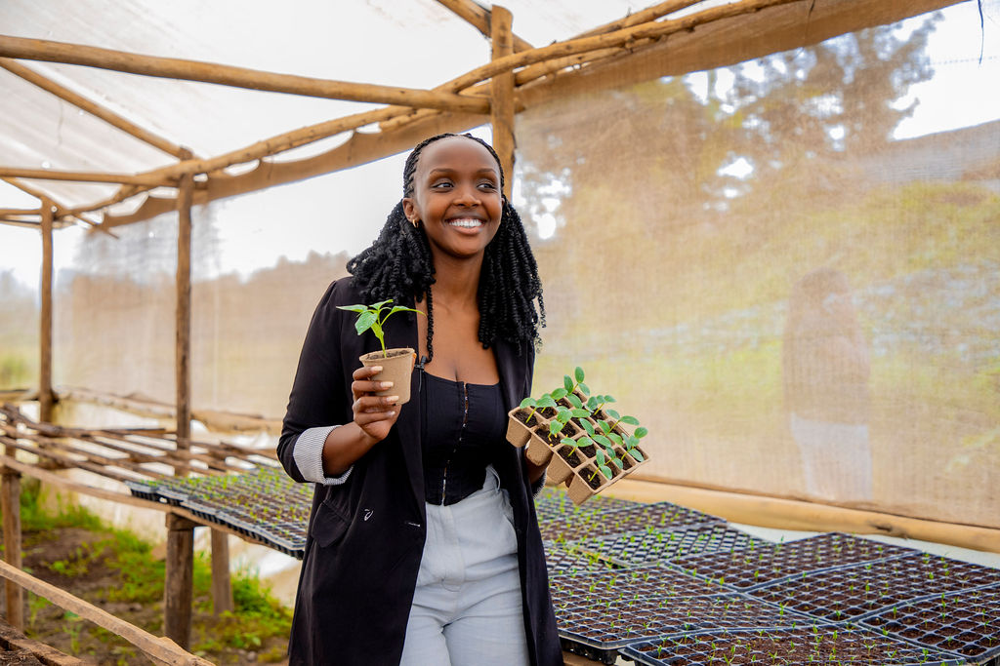
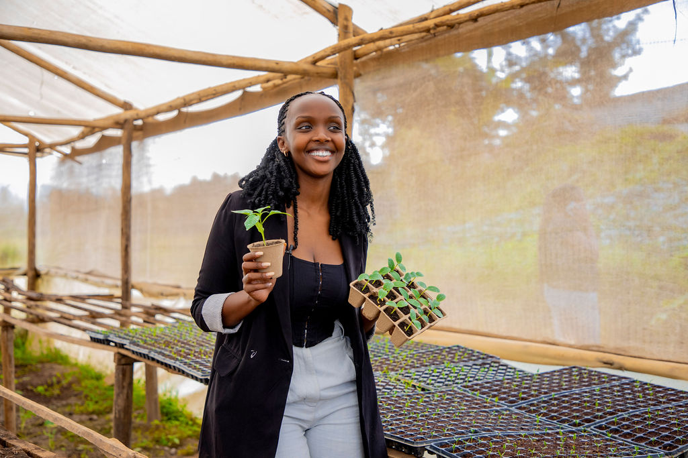

Connect With Us
Better Farming Starts with Better Tools
At Bana Bags, we build smart, simple tools to help farmers grow healthy crops and protect the land. Our bags are made from recycled materials; good for plants, better for the soil. From small farms to large cooperatives, we help Rwandan growers work with nature, not against it.
Read More →Production
Our Services
Helping Farmers Grow Sustainably, Every Step of the Way
We design smart, sustainable tools for agriculture, starting with our biodegradable seed bags. From clean production to farmer training, here’s how we’re making a real difference.
01 Biodegradable Seed Bags for Farming +
 

02 Farmer Training & Support −
We don’t just sell products
we guide farmers on how to use them well. Through short training sessions, demos, and simple printed guides, we show farmers how to grow smarter and protect their land
⚫ Hands-on training during product delivery
⚫ Easy steps, shared in local languages
⚫ Focused on women and youth participation
03 Digital Tools for Easy Ordering +

04 Climate-Smart Farming Solutions +

05 Community Job Creation & Local Impact +

Trusted By Industry